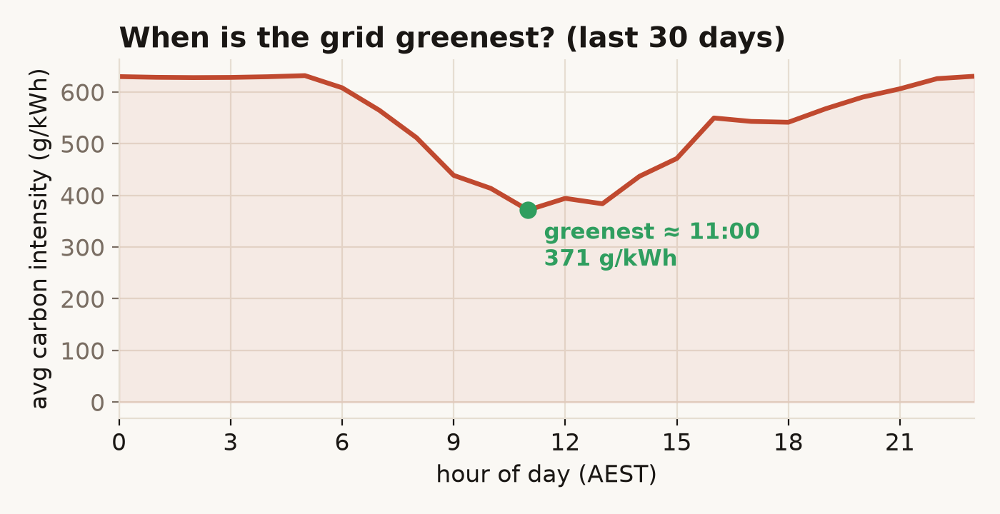

The headline number is grams of CO₂ per kilowatt-hour. It's an estimate — the live fuel mix weighted by emission factors — because the operator's settled emissions lag real time. How it's checked ↓
What's powering the grid
Live generation across the NEM by fuel, as a share of what's being produced this interval. Hover a band for the megawatts.
The daily rhythm of the grid
Generation by fuel, hour by hour. Watch solar swell at midday and push the fossil fleet down — then fall away into the evening peak, when gas and hydro step in.
One market, wildly different carbon
Every region trades into the same market, yet what comes out of the wall ranges from near-zero to coal-heavy. Sorted cleanest first.
The spread is the whole point. On a recent winter afternoon Tasmania was running at effectively zero grams — all hydro — while New South Wales sat near 690, a coal grid through and through. South Australia, which a decade ago was coal too, came in around 160 on wind and solar. So "is electricity clean in Australia?" has no single answer; it depends entirely on which side of a state border you're standing on. The order isn't even fixed: at midday a sunny South Australia can briefly run carbon-free and negative-priced, while a still, overcast evening pushes every mainland region up.
When is the grid greenest?
Averaged over the last month, the grid is cleanest in the late morning, when rooftop and grid-scale solar peak together and shove the coal and gas fleet down. It's dirtiest in the evening, after the sun drops and demand climbs for cooking and heating. The gap is big enough to act on: shifting a dishwasher or an EV charge from 7pm to 11am is a real emissions cut, for free.

The transition, day by day
Each point is a whole day across the NEM. Carbon intensity here is the authoritative figure — the operator's settled emissions over energy, not my estimate.
Two relationships fall out of four months of this. Renewable share tracks carbon intensity at r = −0.98 — a near-perfect inverse, which is really a sanity check that two independent measurements agree. More interesting: renewable share versus the daily wholesale price comes in at r = −0.80. High-renewable days are cheaper days, because zero-fuel-cost wind and solar displace expensive gas at the margin — the merit-order effect. Over the window price swung from $29 to $328 per megawatt-hour; flip the toggle to renewable share and the two move as mirror images.
Carbon intensity, two ways — and a cross-check
The headline number is computed two different ways on purpose. The live gauge weights the current fuel mix by emission factors (coal 0.98, gas 0.49, distillate 0.85 tCO₂/MWh; renewables and storage zero) and divides by total generation — an estimate, because settled emissions don't exist until a day closes. The 120-day trend uses the operator's own settled emissions over energy: authoritative, but lagged.
The estimate is only worth showing if it tracks the truth, so the page measures its own error: on the latest overlapping day the live figure lands within about 2% of the settled one. That agreement is what licenses the live gauge — without it, the "right now" number would just be a guess in a lab coat.
The pipeline
A small Python job pulls generation, emissions, price and demand from the Open Electricity API, computes the metrics, and writes two JSON files straight into this static page — a live snapshot plus a back-filled daily history. A launchd job reruns it five times a day and pushes; there's no server and nothing to pay at view time.
# the whole live gauge: mix (MW) × factors ÷ generation
def intensity_from_mix(mix_mw):
gen = sum(mw for f, mw in mix_mw.items() if mw > 0)
emit = sum(mw * FACTOR[f] for f, mw in mix_mw.items() if mw > 0)
return emit / gen * 1000 # tCO2/MWh → gCO2/kWhFull source on GitHub ↗ — Python · requests · D3, pytest over the pure transforms.
What's approximate, and what this isn't
Emission factors are fleet averages, not per-station — the coal group blends black and brown at a sent-out-weighted 0.98. Battery discharge counts as generation; charging and pumped-hydro load are excluded so storage isn't double-counted. Bioenergy is treated carbon-neutral, per the national greenhouse convention — standard, and debatable.
And this is the wholesale grid, not your bill: rooftop solar consumed behind the meter never reaches the market, so it isn't fully here. The settled daily figure is the one to trust; the live gauge is a well-checked stand-in for the number that won't exist until the day is done.
Electricity has a time and a place. The same socket swings from near-clean to coal-heavy across a day, and from zero to seven hundred grams across a state line — and almost nobody can see it happening.